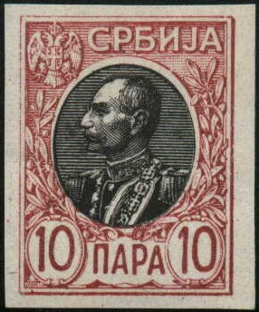
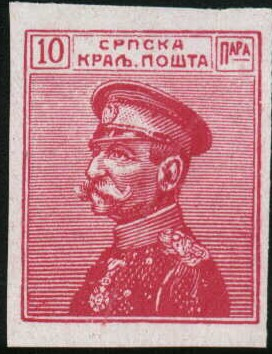

{kind=link}

(Mirza Hadi imperforate forgeries)
Note: on my website many of the
pictures can not be seen! They are of course present in the
catalogue;
contact me if you want to purchase the catalogue.
Mirza Hadi was of Persian origins and later became a stamp dealer in Paris and Monaco. He is known for his involvment in the reprints of Transvaal stamps (see "Philatelic Forgers, their Lives and Works" by V.E.Tyler).
The London Philatelist Vol XXII 1913, page 191 reports a
robbery of his stamps by his own wife(!)
A ROBBERY OF STAMPS AT PARIS.
We regret to learn that a deep inroad upon M. Hadi Mirza's
philatelic possessions has been made and trust that the stamps
may yet be recovered. It appears, according to the Daily
Telegraph of August 19th, that on the preceding day "A
complaint was lodged with the Commissary of Police of the
Faubourg- Montmartre, in respect of a theft of stamps of the
value of £20,000, committed in the offices of M. Hadi Mirza, a
Persian philatelist in the Rue Drouot. In response to a telegram
sent by his concierge, the philatelist returned post-haste to
Paris, which he reached early this morning. On entering his flat
he found that the door leading into his office had been clumsily
forced. In the office itself the cupboard in which he kept his
collections was open, and the philatelist soon discovered that
the most valuable stamps had disappeared. M. Mirza considers
£20,000 as a conservative estimate of his losses."
During the holiday season minor events frequently attain rather
abnormal importance and our first impression as to M. Mirza's
"£20,000" has been corroborated by later news as
regards this robbery.
It appears that M. Mirza suspected his wife, from whom he was
separated, of having been the author of the robbery, and a woman
whose description tallied with that of Madame Hadi Mirza
subsequently attempted, without success, to sell some of the
stolen stamps in Berlin. Later Madame Hadi Mirza gave herself up
in Paris, confessing to having stolen the stamps, which, she
said, were worth £1000 at most. She had done so because her
husband, though several times a millionaire -in francs- refused
to allow her and her children more than £8 a month.
It is said that her defence is that though divorce proceedings
are pending between her and her husband the decree has not yet
been pronounced. In that case, of course, no charge can lie
against her in French law, according to which a wife cannot rob
her husband.
In November 1965 he was living in Monaco as the following extract from the French National Assembly concludes:
http://archives.assemblee-nationale.fr/2/cri/1965-1966-ordinaire1/053.pdf
(Assemblee Nationale, 3e Seance du 5 Novembre 1965), page 4569:
"Pétition n° 145 du 6 avril 1965. -- M. Mirza (Hadi),
10, rue des Giroflées, à Monte-Carlo (Monaco), a éte victime
d'un vol de timbres de valeur. Bien que la police n'ait retrouvé
qu'une partie de ceux-ci, le juge a prononcé un non-lieu . Le
pétitionnaire proteste contre la loi qui a permis cette
décision."
This archive document report on a theft of rare stamps from Mr.
Mirza from Monaco.
Mirza Hadi forgeries of Serbia:

(Mirza Hadi imperforate forgeries)

(Small opening in the upper right hand corner)

Possibly another Mirza Hadi forgery of Serbia.

Forgery made by photo lithography, possibly made by Mirza Hadi in
Paris (according to the certificate of Mehrdad Sadri)
Mirza Hadi obtained a large quantity of remainders of the 1 c, 2 c and 60 c stamps of the ESTERO issue of Italy of 1874 (somewhere before 1912). After applying a forged "234" cancel he sold them to collectors (source: 'Philatelic Forgers, their Lives and Works' by V.E. Tyler).
{kind=link}